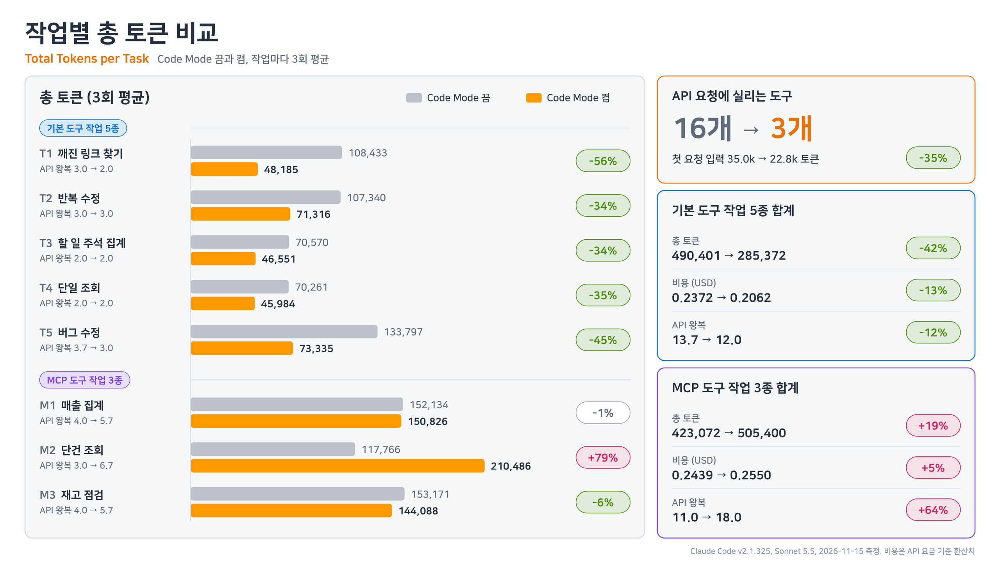
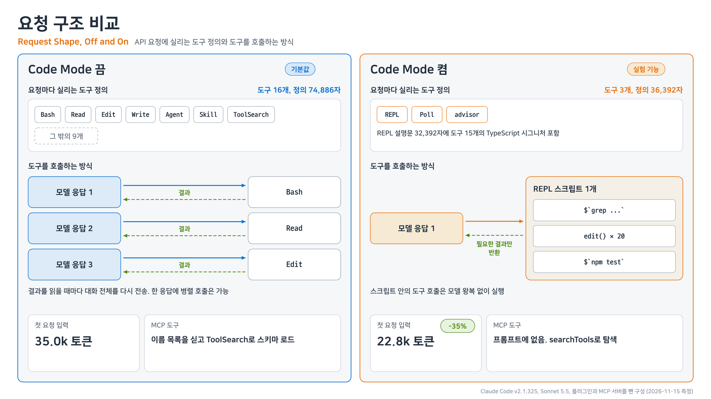
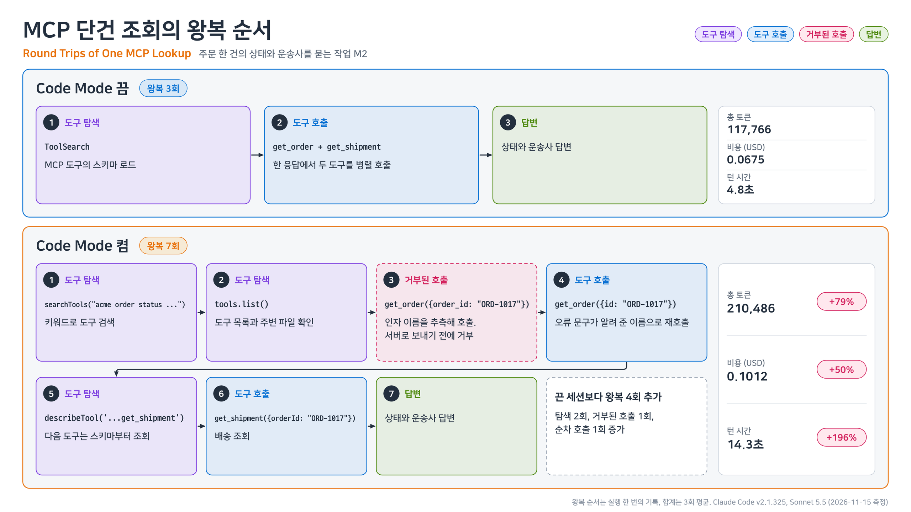
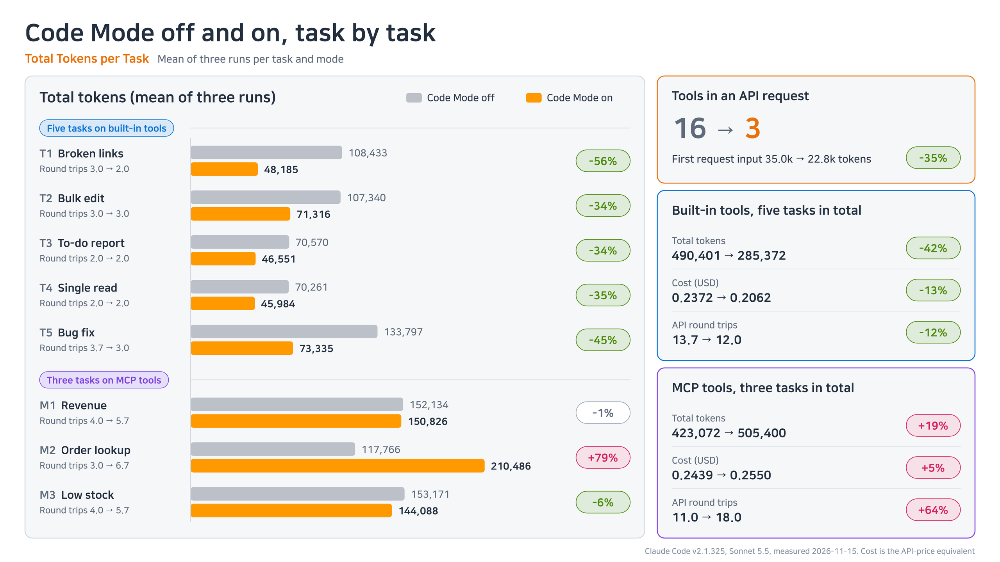
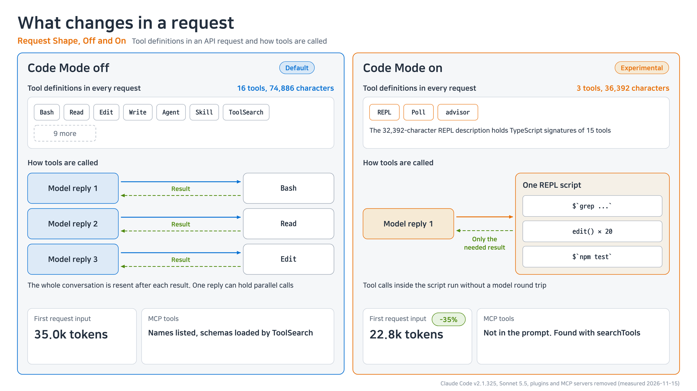
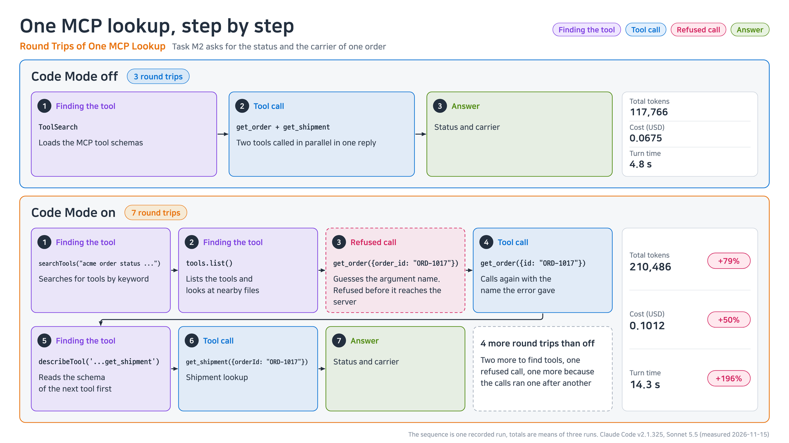

Claude Code의 Code Mode를 켜면 토큰과 비용의 절감 효과를 실제 테스트 해 보았습니다. 실제 사용 중인 환경에서 적용해 보면 API 요청에 실리는 도구가 16개에서 3개로 줄어 기본 도구 작업에서는 총 토큰이 42%, 비용이 13% 줄었습니다. 하지만 MCP 도구 작업에서는 도구를 찾는 왕복이 더해져 총 토큰이 19% 늘었습니다. 현재 이 기능은 Anthropic API에 직접 연결한 대화형 터미널 세션에서만 동작합니다.I turned on Code Mode in Claude Code and tested how much it saves in tokens and cost. Applied in an environment in actual use, the tools in each API request went from 16 to 3, so tasks on built-in tools used 42% fewer total tokens and cost 13% less. However, tasks on MCP tools needed extra round trips to find the tools and used 19% more total tokens. This feature currently runs only in an interactive terminal session connected directly to the Anthropic API.
claude -p, OpenTelemetry 내보내기와는 함께 사용할 수 없습니다.Limits: it cannot be used with Amazon Bedrock, claude -p, or OpenTelemetry export.Claude Code v2.1.323에 Code Mode가 추가됐습니다. npm 게시일은 2026년 11월 12일입니다. 변경 기록은 이 기능을 Claude가 JavaScript를 작성해 도구를 호출하는 실험적 옵트인 기능으로 소개합니다.
이 방식으로 줄이려는 것은 왕복(round trip)과 도구 정의(tool definitions)입니다. 여러 도구 호출을 코드 하나로 묶으면 모델과 주고받는 왕복이 줄고 요청마다 실리는 도구 정의도 줄어듭니다. 필자는 이 효과가 얼마나 되는지 확인하려고 같은 작업을 Code Mode를 끈 세션과 켠 세션에서 실행해 토큰, 비용, 왕복 횟수를 비교했습니다. 버전은 v2.1.325, 모델은 Sonnet 5.5이고 측정은 54회입니다.

먼저 결론입니다.
claude -p, OpenTelemetry 내보내기와는 함께 사용할 수 없습니다.Code Mode는 실험 기능이고 기본값은 비활성화 입니다. 공식 문서는 어느 릴리스에서든 바뀌거나 없어질 수 있다고 공지하고 있습니다. 이 글의 수치는 2026년 11월 15일에 v2.1.325에서 측정한 값입니다.
01
공식 문서에 따르면 Code Mode가 없을 때 Claude는 Bash, Read, Edit 같은 도구 호출을 직접 요청하고 결과를 하나씩 읽은 뒤 다음 행동을 정합니다. Code Mode에서는 Claude가 도구 호출을 담은 JavaScript를 작성하고 Claude Code가 그 코드를 세션 안에서 실행합니다. 코드 하나가 명령을 병렬로 실행하고 앞 호출의 결과를 다음 호출에 넘기며 Claude가 읽어야 할 부분만 돌려줍니다.
아래는 공식 문서의 예시입니다. 재시도 한도를 올려 달라는 요청에 Claude가 파일을 찾아 수정하고 테스트까지 실행하는 코드를 작성합니다. 마지막 줄이 수정한 파일의 경로와 테스트 출력을 Claude에게 돌려줍니다.
const files = await $`rg -l "function retryPolicy" src`.text();
const target = files.trim().split("\n")[0];
await edit(target, "maxAttempts: 3", "maxAttempts: 5");
({ edited: target, tests: $`npm test -- retryPolicy`.nothrow() });대화 화면에는 코드 대신 수정 diff 같은 도구 호출이 표시됩니다. 코드를 보려면 Ctrl+O로 기록 보기(transcript viewer)를 열고 접혀 있는 Code 행을 펼칩니다.
Claude Code는 세션 기록 파일에 API로 보낸 요청의 형태를 남깁니다. 같은 프로젝트에서 Code Mode를 끈 세션과 켠 세션의 기록을 비교했습니다.

| 항목 | Code Mode 끔 | Code Mode 켬 |
|---|---|---|
| API 요청의 도구 수 | 16개 | 3개 (REPL, Poll, advisor) |
| 도구 정의 크기 | 74,886자 | 36,392자. 이 가운데 REPL 설명문이 32,392자 |
| 첫 요청의 입력 토큰 | 35.0k | 22.8k |
/context의 System tools 추정치 | 21.9k | 6.1k |
| MCP 도구 9개를 연결했을 때 | 이름만 먼저 싣고 ToolSearch 뒤에 스키마를 불러와 26개 | 그대로 3개 |
표 1. Code Mode를 끈 세션과 켠 세션의 API 요청 비교. v2.1.325, Sonnet 5.5, 플러그인과 MCP 서버를 뺀 구성
장보기 심부름에 비유하면 이해하기 쉽습니다. 집에서 살 것을 정하는 사람이 모델이고 가게를 다니는 사람이 Claude Code입니다. Code Mode를 끄면 심부름하는 사람은 가게에 들를 때마다 집에 전화해 다음에 무엇을 살지 묻습니다. 전화할 때마다 지금까지 산 물건과 동네 가게 16곳의 안내문을 처음부터 다시 읽어 줍니다. Code Mode를 켜면 집에 있는 사람이 "우유가 없으면 두유를 사고 결과는 마지막에 한 번만 알려 달라"는 쪽지를 써 줍니다. 심부름하는 사람은 쪽지대로 여러 가게에 들른 뒤 한 번만 전화합니다. 안내문은 3장으로 줄고 단골 가게 15곳의 주문 방법은 그중 한 장에 요약돼 있습니다. 처음 가는 가게인 MCP 도구는 이 요약에 없어서 위치와 주문 방법부터 물어봐야 합니다.
비유와 실제가 다른 점이 두 가지 있습니다. Code Mode를 끈 세션에서도 전화 한 통에 여러 가게 심부름을 함께 맡길 수 있습니다. 다시 읽어 주는 내용은 프롬프트 캐시(prompt cache)에서 읽어 낮은 단가로 계산됩니다. 측정 결과가 기대와 달랐던 이유가 이 두 가지입니다. 요청마다 앞부분을 다시 보내는 구조와 캐시의 관계는 Claude Code 토큰 비용 최적화하기 1부에서 다뤘습니다.
Claude가 작성한 코드는 REPL이라는 도구로 실행됩니다. 도구 수는 줄었지만 기존 도구가 없어진 것은 아닙니다. REPL 설명문 안에 Bash, Read, Edit, Write, Glob, Grep, Agent를 포함한 도구 15개가 TypeScript 시그니처로 들어 있습니다. 덜 사용하는 기본 도구 20개는 이름만 나열돼 있고 describeTool(name)으로 스키마를 조회합니다. MCP 도구는 이름도 실리지 않으며 설명문은 searchTools로 찾으라고 안내합니다.
설명문은 비용 구조도 모델에게 직접 알려 줍니다. REPL 호출 하나하나가 모델 왕복이고 그때마다 대화 전체를 다시 읽지만 스크립트 안에서 하는 일은 상대적으로 비용이 들지 않는다는 내용입니다. 왕복을 줄이는 것이 설계 의도라는 점은 여기서 확인됩니다.
02
환경 변수 CLAUDE_CODE_EXPERIMENTAL_CODE_MODE를 1로 설정하고 claude를 시작합니다. 한 번 시험할 때는 셸에 넣고 새 세션마다 켜려면 사용자 설정 ~/.claude/settings.json의 env에 넣습니다. 프로젝트 설정 파일에 넣은 값은 무시됩니다. 내려받은 저장소가 사용자 모르게 Code Mode를 켜지 못하게 막는 동작입니다.
CLAUDE_CODE_EXPERIMENTAL_CODE_MODE=1 claude처음 실행하면 확인 화면이 나타납니다. 켜지 않고 시작(No, start without it)이 기본 선택이어서 Enter만 누르면 켜지지 않습니다. Code Mode 켜기(Yes, turn on Code Mode)를 고르면 Claude Code가 다시 시작하고 세션 위쪽에 아래 문구가 표시됩니다.
Code Mode (experimental) is on · this session can be resumed only with Code Mode on/status에도 상태가 나옵니다. 필자의 화면에는 Code Mode: on (experimental)과 함께 변수를 셸 환경에서 읽었다는 설명이 표시됐습니다.
공식 문서가 밝힌 요구 사항을 옮겼습니다.
claude 세션. -p, Agent SDK, VS Code 패널, 데스크톱 앱, 클라우드 세션에서는 동작하지 않습니다.DISABLE_TELEMETRYCode Mode 세션에서는 Remote Control, Claude in Chrome, computer use도 사용할 수 없습니다. 세션을 데스크톱 앱이나 백그라운드 세션으로 옮기지도 못합니다. 백그라운드로 실행되지 않는 코드는 10분이 지나면 멈춥니다.
조건이 맞지 않으면 Claude Code는 Code Mode 없이 시작하고 세션 위쪽에 Code Mode (experimental) isn't available과 이유를 표시합니다. 표 2는 프롬프트를 보내지 않고 시작 화면만 확인한 결과입니다.
| 조건 | 결과 | 화면에 표시된 이유 |
|---|---|---|
OpenTelemetry 내보내기 켬 (CLAUDE_CODE_ENABLE_TELEMETRY=1) | 시작 안 됨 | OpenTelemetry is on (...), and Code Mode doesn't yet send it an event for each tool call |
Amazon Bedrock (CLAUDE_CODE_USE_BEDROCK=1) | 시작 안 됨 | for now it only works with the Anthropic API |
| Sonnet 4.5 | 시작 안 됨 | for now it only works with Opus 5.5, Sonnet 5.5 and later models |
claude -p | 적용 안 됨 | 문구 없음. 도구 목록에 REPL이 없고 기존 도구로 실행 |
셸에는 1, --settings에는 0 | 비활성화 | 문구 없음 |
표 2. 시작 조건 시험 결과. v2.1.325에서 2026년 11월 15일에 확인
필자의 장비는 평소 OpenTelemetry Collector로 사용량을 내보내고 있어서 환경 변수만 넣어서는 켜지지 않았습니다. 사용자 설정은 그대로 두고 --settings로 텔레메트리 변수만 0으로 덮어쓰자 시작됐습니다.
CLAUDE_CODE_EXPERIMENTAL_CODE_MODE=1 claude --settings '{"env":{"CLAUDE_CODE_ENABLE_TELEMETRY":"0"}}'사용량 수집이 조직의 정책이라면 이 방법을 사용하지 않는 것을 권고합니다. 이렇게 시작한 세션의 사용량은 OpenTelemetry로 나가지 않기 때문입니다.
Code Mode로 시작한 세션은 Code Mode를 켠 터미널에서만 재개됩니다. 변수 없이 claude --resume을 실행하자 세션이 재개되지 않고 종료 코드 1로 끝났습니다. 화면 문구는 This session was started in Code Mode (experimental), which is off, so it can't be resumed.입니다. 일반 세션을 변수를 켠 채 재개하면 기존 도구로 계속 진행합니다.
관리 설정(managed settings)의 env에 같은 변수를 값 0으로 넣으면 조직의 누구도 Code Mode를 사용하지 못합니다. 문서에 따르면 이미 Code Mode 세션 안에 있는 사용자는 종료하거나 다시 시작할 때까지 그대로 유지됩니다. 그 뒤로는 Code Mode 없이 시작하고 기존 Code Mode 세션도 재개하지 못합니다. 관리 설정으로 사용자의 Code Mode를 켜 주는 방법은 없습니다.
{
"env": {
"CLAUDE_CODE_EXPERIMENTAL_CODE_MODE": "0"
}
}필자는 조직 관리 설정 자체는 시험하지 않았습니다. 설정을 바꾸면 조직 전체에 적용되기 때문입니다. --settings로 넘긴 0이 셸의 1보다 우선한다는 것까지만 확인했습니다.
03
Code Mode는 -p에서 동작하지 않고 OpenTelemetry가 켜져 있으면 시작되지 않습니다. 평소에 사용하던 헤드리스 실행과 OTel 지표를 둘 다 사용할 수 없어서 방법을 바꿨습니다.
대화형 세션은 의사 터미널(PTY)에서 시작하고 터미널 에뮬레이터 라이브러리(pexpect, pyte)로 화면을 읽어 확인 화면과 권한 화면을 넘겼습니다. 토큰은 세션 기록 파일에 남은 응답별 usage를 더해 구했습니다. 두 세션의 실행 옵션은 같고 켠 세션에만 CLAUDE_CODE_EXPERIMENTAL_CODE_MODE=1을 넣었습니다.
claude --session-id <uuid> --setting-sources project,local --strict-mcp-config --model sonnet "<prompt>"| 항목 | 값 |
|---|---|
| 버전과 모델 | Claude Code v2.1.325, Sonnet 5.5, effort medium(기본값), 권한 모드 auto |
| 계정 | Claude 구독 계정. Anthropic API에 직접 연결 |
| 구성 | 사용자 설정 제외(플러그인, 훅, MCP 서버 없음), 자동 메모리 끔 |
| 실험 프로젝트 | 파일 54개인 Node 프로젝트. 서비스 모듈 20개, Markdown 25개. 정답은 생성 스크립트가 미리 계산 |
| MCP 서버 | 주문, 고객, 상품, 재고, 배송을 조회하는 읽기 전용 도구 9개. 서버가 받은 호출을 파일에 기록 |
| 반복 | 작업마다 모드별 3회. 어느 모드를 먼저 실행할지 번갈아 바꿈 |
| 총 토큰 | 주 대화의 모든 API 응답에서 입력, 캐시 쓰기, 캐시 읽기, 출력 토큰을 더한 값 |
| 비용 | 세션 기록의 totalCostUSD. Claude Code가 계산한 세션 전체 값이며 구독 계정이므로 API 요금 기준 환산치 |
| 턴 시간 | 세션 기록의 turn_duration |
표 3. 측정 조건. 2026년 11월 15일, Linux aarch64
| 작업 | 프롬프트 요지 | 성격 |
|---|---|---|
| T1 | 모든 Markdown 파일에서 존재하지 않는 로컬 파일을 가리키는 링크 찾기(공식 문서의 예시 프롬프트) | 여러 파일 읽기와 검사 |
| T2 | 서비스 20개의 maxAttempts를 3에서 5로 바꾸고 npm test 실행 | 반복 수정 |
| T3 | src 아래 할 일 주석을 담당자별로 집계 | 검색 후 집계 |
| T4 | package.json의 버전 확인 | 호출 한 번인 대조군 |
| T5 | 실패하는 테스트의 원인을 찾아 고치고 통과 확인 | 단계가 서로 의존 |
| M1 | 2026년 10월 출고 주문의 매출 합계와 상위 고객 3곳 | MCP 호출 13회, 여러 도구 조합 |
| M2 | 주문 한 건의 상태와 운송사 | MCP 호출 2회인 대조군 |
| M3 | 재고가 재주문 기준보다 적은 상품 | MCP 호출 31회, 상품마다 한 번씩 조회 |
| S1 | 한 세션에서 M2, M3, M1을 차례로 요청 | 여러 턴 세션 |
표 4. 측정에 사용한 작업. T는 기본 도구, M은 MCP 도구, S는 여러 턴 세션
세션 기록은 ~/.claude/projects/ 아래에 세션 ID 이름으로 저장되고 한 줄에 JSON 하나씩 쌓입니다. 필자가 v2.1.325의 기록에서 확인한 바로는 requestId가 있는 assistant 줄이 API 응답이고 message.usage에 토큰이 들어 있습니다. 응답 하나가 여러 줄로 나뉘어 기록되므로 message.id로 묶어야 중복으로 세지 않습니다. Code Mode 스크립트 안에서 일어난 도구 호출은 requestId가 없는 줄로 남고 토큰은 0입니다.
import json, sys
seen = {}
for line in open(sys.argv[1]):
try:
r = json.loads(line)
except json.JSONDecodeError:
continue
# requestId가 없는 줄은 스크립트 안에서 일어난 도구 호출입니다
if r.get("type") != "assistant" or r.get("isSidechain") or not r.get("requestId"):
continue
m = r["message"]
seen[m["id"]] = m.get("usage", {}) # 한 응답이 여러 줄로 나뉘므로 message.id로 묶습니다
keys = ["input_tokens", "cache_creation_input_tokens", "cache_read_input_tokens", "output_tokens"]
total = {k: sum(u.get(k, 0) for u in seen.values()) for k in keys}
print(len(seen), "API responses", total, "total", sum(total.values()))이 형식은 문서로 공개된 규격이 아니어서 버전이 바뀌면 달라질 수 있습니다.
04
30회 모두 정답이었습니다. 표 5의 값은 3회 평균이고 화살표 왼쪽이 Code Mode를 끈 세션, 오른쪽이 켠 세션입니다.
| 작업 | API 왕복 | 총 토큰 | 총 토큰 변화 | 출력 토큰 변화 | 비용(USD) | 비용 변화 | 턴 시간(초) |
|---|---|---|---|---|---|---|---|
| T1 깨진 링크 | 3.0 → 2.0 | 108,433 → 48,185 | -56% | -22% | 0.0604 → 0.0488 | -19% | 11.0 → 11.5 |
| T2 반복 수정 | 3.0 → 3.0 | 107,340 → 71,316 | -34% | -16% | 0.0480 → 0.0435 | -9% | 6.2 → 10.0 |
| T3 할 일 주석 집계 | 2.0 → 2.0 | 70,570 → 46,551 | -34% | +30% | 0.0389 → 0.0369 | -5% | 4.4 → 5.4 |
| T4 단일 조회 | 2.0 → 2.0 | 70,261 → 45,984 | -35% | -28% | 0.0322 → 0.0283 | -12% | 2.9 → 3.5 |
| T5 버그 수정 | 3.7 → 3.0 | 133,797 → 73,335 | -45% | -28% | 0.0578 → 0.0488 | -16% | 8.6 → 8.8 |
| 합계 | 13.7 → 12.0 | 490,401 → 285,372 | -42% | -18% | 0.2372 → 0.2062 | -13% |
표 5. 기본 도구 작업 5종의 결과. 각 칸은 Code Mode 끔과 켬의 순서이고 작업마다 3회 평균. 비용은 API 요금 기준 환산치
총 토큰은 다섯 작업 모두에서 34% 이상 줄었지만 왕복은 두 작업에서만 줄었습니다.
sed 한 줄로 파일 20개를 고쳤습니다. 켠 세션은 같은 일을 REPL 스크립트 하나로 했습니다. T1의 스크립트는 한 번 실행에 내부 도구 호출이 126회였습니다.edit()를 20번 차례로 호출하느라 6.2초에서 10.0초로 늘었습니다.아래는 T2에서 Claude가 작성한 스크립트입니다. 대상 파일을 찾아 차례로 수정한 뒤 남은 곳이 없는지 확인하고 테스트를 실행합니다. 결과가 모델에게 전달되는 것은 마지막 줄 한 번입니다.
const files = (await $`grep -rl "maxAttempts: 3," src/services`.text()).trim().split('\n');
for (const f of files) await edit(f, 'maxAttempts: 3,', 'maxAttempts: 5,');
const left = await $`grep -rn "maxAttempts" src/services | grep -v "maxAttempts: 5,"`.nothrow().text();
const t = await $`npm test 2>&1`.nothrow();
({n: files.length, left, code: t.exitCode, out: t.stdout.slice(-2500)})05
18회 모두 정답이었습니다. M3의 4회는 검증 스크립트가 답변의 설명 문장에 나온 상품 ID까지 목록으로 세는 문제가 있었습니다. 검증 스크립트를 고친 뒤 저장해 둔 답변으로 다시 판정했습니다.
| 작업 | API 왕복 | 총 토큰 | 총 토큰 변화 | 출력 토큰 변화 | 비용(USD) | 비용 변화 | 턴 시간(초) |
|---|---|---|---|---|---|---|---|
| M1 매출 집계 (호출 13회) | 4.0 → 5.7 | 152,134 → 150,826 | -1% | -26% | 0.0825 → 0.0822 | 0% | 12.1 → 14.9 |
| M2 단건 조회 (호출 2회) | 3.0 → 6.7 | 117,766 → 210,486 | +79% | +184% | 0.0675 → 0.1012 | +50% | 4.8 → 14.3 |
| M3 재고 점검 (호출 31회) | 4.0 → 5.7 | 153,171 → 144,088 | -6% | -57% | 0.0939 → 0.0716 | -24% | 15.6 → 13.3 |
| 합계 | 11.0 → 18.0 | 423,072 → 505,400 | +19% | -29% | 0.2439 → 0.2550 | +5% |
표 6. MCP 도구 작업 3종의 결과. 각 칸은 Code Mode 끔과 켬의 순서이고 작업마다 3회 평균. 비용은 API 요금 기준 환산치
세 작업 모두 켠 세션의 왕복이 더 많았습니다. Code Mode에서는 MCP 도구가 프롬프트에 없기 때문입니다. MCP 서버를 연결해도 켠 세션의 첫 요청은 17 토큰만 늘었습니다. 끈 세션은 도구 이름 목록이 실려 150 토큰 늘었습니다. MCP 문서에 따르면 끈 세션에서도 도구 검색(tool search)이 기본값이어서 시작할 때는 도구 이름만 실립니다.
그림 3은 호출 2회짜리 작업 M2의 한 실행을 왕복 순서대로 놓은 것입니다. 끈 세션은 ToolSearch 한 번으로 스키마를 받고 두 도구를 한 응답에서 병렬로 호출해 3회 만에 끝났습니다. 켠 세션은 7회가 걸렸습니다.

켠 세션에서 Claude가 차례로 작성한 스크립트 여섯 개입니다. 한 줄이 왕복 한 번입니다.
// 1. 도구 찾기
const r = await searchTools("acme order status shipment carrier", 10); r
// 2. 도구 목록과 주변 파일 확인
const l = tools.list().filter(n=>/acme|order|ship/i.test(n)); ({l, all: tools.list().length, ls: await $`ls -la; cat .mcp.json 2>/dev/null; ls ~/.claude 2>/dev/null`.nothrow().text()})
// 3. 인자 이름을 추측해 호출. 서버에 보내지 않고 거부됨 ("does not declare `order_id` ... It takes: id")
const o = await tools.mcp__acme__get_order({order_id:"ORD-1017"}); o
// 4. 이름을 고쳐 다시 호출
const o2 = await tools.mcp__acme__get_order({id:"ORD-1017"}); o2
// 5. 다음 도구는 스키마부터 조회
const d = await describeTool('mcp__acme__get_shipment'); d.inputSchema
// 6. 배송 조회
await tools.mcp__acme__get_shipment({orderId:"ORD-1017"})searchTools, tools.list(), describeTool에 사용했습니다. 반환 형태를 몰라 o.items||o.lines||o.lineItems처럼 여러 이름을 대비한 스크립트도 나왔습니다.도구 탐색 비용이 첫 턴 뒤로 분산되는지 보려고 M2, M3, M1을 한 세션에서 차례로 요청했습니다.
| 모드 | 정답 | API 왕복 | 총 토큰 | 출력 토큰 | 비용(USD) | 실행별 API 왕복 |
|---|---|---|---|---|---|---|
| 끔 | 2/3 | 9.7 | 430,288 | 4,198 | 0.1813 | 10, 9, 10 |
| 켬 | 3/3 | 14.7 | 513,346 | 2,904 | 0.1804 | 17, 15, 12 |
| 변화 | +52% | +19% | -31% | 0% |
표 7. MCP 작업 3개를 한 세션에서 이어서 실행한 결과. 모드별 3회 평균
세 턴으로 늘려도 켠 세션의 왕복과 총 토큰이 더 많았고 비용은 같은 수준이었습니다. 탐색은 첫 턴에 몰리지만 뒤 턴에서도 처음 사용하는 도구는 다시 조회했습니다. 켠 세션은 실행마다 12회에서 17회로 편차가 컸고 끈 세션은 9회에서 10회로 일정했습니다. 끈 세션의 오답 1건은 매출 합계와 상위 고객 3곳을 맞혔지만 고객 이름 대신 고객 ID만 적은 답입니다.
06
스크립트 하나가 도구를 수십 번 호출한다면 권한 규칙이 그대로 적용되는지가 중요합니다. 문서에 따르면 Claude의 코드가 하는 도구 호출 하나하나가 deny와 ask 권한 규칙, PreToolUse 훅을 거칩니다. auto 모드에서는 분류기가 도구 호출이 아니라 코드를 실행 전에 검토합니다.
필자는 curl 차단 규칙과 모든 도구 호출을 기록하는 PreToolUse 훅을 걸고 git --version과 curl --version을 실행하게 했습니다.
| 권한 모드 | Code Mode를 켠 세션에서 일어난 일 |
|---|---|
| default | 훅이 REPL 호출(스크립트 원문 포함)과 스크립트 안의 Bash 호출을 모두 받았습니다. 차단 규칙은 스크립트 안의 curl 호출만 거부했고 스크립트는 계속 실행됐습니다. 스크립트 안의 git 호출에는 평소와 같은 승인 화면이 나타났습니다. |
| auto | 분류기가 스크립트를 실행 전에 통째로 거부했습니다. git도 실행되지 않았고 훅은 REPL 호출만 받았습니다. |
표 8. 권한 모드별 동작. curl 차단 규칙과 PreToolUse 훅을 건 상태
default 모드의 결과는 문서의 설명과 일치합니다. auto 모드의 결과는 1회 관측이고 프롬프트 문구가 default 시험과 조금 달랐으므로 일반화하기는 어렵습니다.
문서에 따르면 auto 모드의 분류기는 검색 결과에서 얻은 경로처럼 실행 중에 계산되는 값을 보지 못합니다. 반드시 통제해야 하는 호출에는 규칙이나 훅을 남겨 둡니다. 스크립트 자체를 검사하려면 REPL에 매칭되는 PreToolUse 훅을 작성하고 tool_input.code에서 JavaScript를 읽습니다.
07
이번 측정을 근거로 한 필자의 판단입니다. 모델과 작업이 달라지면 결과도 달라질 수 있습니다.
claude -p 자동화, OpenTelemetry로 사용량을 수집하는 환경에서는 지금은 사용할 수 없습니다.Code Mode라는 이름은 다른 도구에서도 사용됩니다. Nuxt MCP Toolkit 문서는 Claude Sonnet 벤치마크(도구 9개, 작업 7개)에서 전체 토큰 15%, 복잡한 배치 작업에서 최대 33% 절감을 보고합니다. 이 기능은 MCP 서버 쪽에 구현한 것이고 문서에 모델 버전, 총 토큰의 정의, 원자료가 없습니다. Claude Code의 기대 절감률로 옮기기는 어렵습니다. 이번 측정에서 도구 9개인 MCP 서버 조건의 결과는 총 토큰 19% 증가였습니다.
08
/context 추정치만 비교했고 시작 컨텍스트가 50.1k에서 35.2k로 줄었습니다.Code Mode가 토큰을 얼마나 줄이는지는 작업이 어떤 도구를 사용하는지에 따라 달랐습니다. 기본 도구만 사용하는 작업에서는 도구 정의가 16개에서 3개로 줄어든 효과로 총 토큰이 42% 줄었습니다. MCP 도구를 사용하는 작업에서는 도구를 찾는 왕복이 더해져 총 토큰이 19% 늘었습니다. 비용 변화는 두 경우 모두 토큰 변화보다 작았습니다.
왕복을 줄인다는 설계 의도는 분명하지만 Code Mode를 끈 세션도 셸 한 줄과 병렬 호출로 이미 왕복을 줄이고 있습니다. 필자의 측정에서 차이를 만든 것은 왕복 횟수보다 요청마다 실리는 도구 정의의 크기였습니다. 자신의 작업에서 켜기 전에 세션 기록으로 두 모드의 토큰을 직접 비교해 보는 것을 권고합니다.
Claude Code v2.1.323 added Code Mode. It was published to npm on November 12, 2026. The changelog introduces it as an experimental opt-in in which Claude writes JavaScript to call its tools.
The approach aims to cut two things: round trips and tool definitions. When several tool calls are packed into one piece of code, the model is consulted fewer times, and fewer tool definitions ride along with each request. To see how large the effect is, I ran the same tasks in sessions with Code Mode off and on and compared tokens, cost, and round trips. The version was v2.1.325, the model was Sonnet 5.5, and there were 54 measured runs.

The conclusions first.
claude -p, or OpenTelemetry export.Code Mode is experimental and disabled by default. The official documentation gives notice that it may change or be removed in any release. The numbers in this post were measured on November 15, 2026 with v2.1.325.
01
According to the official documentation, without Code Mode Claude asks for tool calls such as Bash, Read, or Edit directly and reads each result before it decides what to do next. With Code Mode, Claude writes JavaScript that makes the tool calls, and Claude Code runs that code in the session. One piece of code can run commands in parallel, pass one result to the next call, and return only the part that Claude needs to read.
The example below is from the official documentation. Asked to raise a retry limit, Claude writes code that finds the file, edits it, and runs the tests. The last line returns the path of the edited file and the test output to Claude.
const files = await $`rg -l "function retryPolicy" src`.text();
const target = files.trim().split("\n")[0];
await edit(target, "maxAttempts: 3", "maxAttempts: 5");
({ edited: target, tests: $`npm test -- retryPolicy`.nothrow() });The conversation shows the tool calls, such as the diff of an edit, in place of the code. To read the code, press Ctrl+O to open the transcript viewer and expand a collapsed Code row.
Claude Code records the shape of each request it sends to the API in the session transcript. I compared the transcripts of a session with Code Mode off and a session with it on, in the same project.

| Item | Code Mode off | Code Mode on |
|---|---|---|
| Tools in the API request | 16 | 3 (REPL, Poll, advisor) |
| Size of the tool definitions | 74,886 characters | 36,392 characters, of which the REPL description is 32,392 |
| Input tokens of the first request | 35.0k | 22.8k |
System tools estimate in /context | 21.9k | 6.1k |
| With 9 MCP tools connected | Names only at first, then 26 tools after ToolSearch loads the schemas | Still 3 |
Table 1. API requests in sessions with Code Mode off and on. v2.1.325, Sonnet 5.5, plugins and MCP servers removed
A grocery errand makes this easier to picture. The person at home who decides what to buy is the model, and the person who goes to the shops is Claude Code. With Code Mode off, the person on the errand phones home at every shop to ask what to buy next. On every call they read out, from the top, everything bought so far and the leaflets of all 16 shops in the neighborhood. With Code Mode on, the person at home writes a note such as "if there is no milk, buy soy milk, and tell me the result once at the end." The person on the errand visits several shops as the note says and phones only once. The leaflets shrink to 3, and one of them summarizes how to order at the 15 regular shops. An MCP tool is a shop they have never visited. It is not in that summary, so they have to ask where it is and how to order there first.
The analogy differs from the real thing in two ways. A session with Code Mode off can also hand over errands for several shops in one phone call. And what gets read out again is read from the prompt cache and billed at a low rate. These two points are why the measured results differed from what I expected. I covered how each request resends its prefix and how the cache relates to that in Optimizing Claude Code token costs, Part 1.
The code Claude writes runs through a tool named REPL. There are fewer tools, but the existing ones are not gone. The REPL description holds TypeScript signatures of 15 tools, including Bash, Read, Edit, Write, Glob, Grep, and Agent. Twenty less used built-in tools are listed by name only, and describeTool(name) returns their schemas. MCP tools are not listed even by name, and the description says to find them with searchTools.
The description also tells the model the cost structure directly. Each REPL call is a model round trip that rereads the whole conversation, while the work inside a script costs comparatively little. This confirms that fewer round trips is the design intent.
02
Set the environment variable CLAUDE_CODE_EXPERIMENTAL_CODE_MODE to 1 and start claude. To try it once, set it in the shell. To turn it on for every new session, put it in env in the user settings file ~/.claude/settings.json. A value in a project settings file is ignored. This keeps a repository you cloned from turning on Code Mode without your knowing.
CLAUDE_CODE_EXPERIMENTAL_CODE_MODE=1 claudeThe first run shows a confirmation screen. The default choice is "No, start without it", so pressing Enter alone does not turn it on. If you select "Yes, turn on Code Mode", Claude Code restarts and shows the line below near the top of the session.
Code Mode (experimental) is on · this session can be resumed only with Code Mode on/status shows the state too. On my screen it showed Code Mode: on (experimental) together with a note that the variable was read from the shell environment.
These are the requirements stated in the official documentation.
claude session in a terminal. It does not work with -p, the Agent SDK, the VS Code panel, the Desktop app, or cloud sessions.DISABLE_TELEMETRYA Code Mode session also cannot use Remote Control, Claude in Chrome, or computer use. The session cannot be moved to the Desktop app or turned into a background session. Code that does not run in the background stops after ten minutes.
When a condition is not met, Claude Code starts without Code Mode and shows Code Mode (experimental) isn't available with the reason near the top of the session. Table 2 lists what the start screen showed, with no prompt sent.
| Condition | Result | Reason shown on screen |
|---|---|---|
OpenTelemetry export on (CLAUDE_CODE_ENABLE_TELEMETRY=1) | Does not start | OpenTelemetry is on (...), and Code Mode doesn't yet send it an event for each tool call |
Amazon Bedrock (CLAUDE_CODE_USE_BEDROCK=1) | Does not start | for now it only works with the Anthropic API |
| Sonnet 4.5 | Does not start | for now it only works with Opus 5.5, Sonnet 5.5 and later models |
claude -p | Not applied | No message. The tool list has no REPL, and the run uses the ordinary tools |
1 in the shell, 0 in --settings | Disabled | No message |
Table 2. Start conditions tested. Checked on November 15, 2026 with v2.1.325
My machine normally exports usage to an OpenTelemetry Collector, so setting the environment variable alone did not turn Code Mode on. It started once I left the user settings as they were and overrode only the telemetry variable to 0 with --settings.
CLAUDE_CODE_EXPERIMENTAL_CODE_MODE=1 claude --settings '{"env":{"CLAUDE_CODE_ENABLE_TELEMETRY":"0"}}'If collecting usage is your organization's policy, I recommend not using this method. The usage of a session started this way is not sent to OpenTelemetry.
A session started in Code Mode resumes only in a terminal with Code Mode on. When I ran claude --resume without the variable, the session did not resume and the command exited with code 1. The message was This session was started in Code Mode (experimental), which is off, so it can't be resumed. An ordinary session resumed with the variable set continues with the ordinary tools.
Putting the same variable with the value 0 in env of the managed settings keeps everyone in the organization from using Code Mode. According to the documentation, users who are already in a Code Mode session stay in it until they exit or restart. After that they start without Code Mode and cannot resume their Code Mode sessions. Managed settings cannot turn Code Mode on for users.
{
"env": {
"CLAUDE_CODE_EXPERIMENTAL_CODE_MODE": "0"
}
}I did not test the organization's managed settings themselves, because a change there applies to the whole organization. I only confirmed that a 0 passed with --settings wins over a 1 in the shell.
03
Code Mode does not work with -p and does not start while OpenTelemetry is on. Neither headless runs nor OTel metrics, my usual tools, were available, so I changed the method.
I started each interactive session in a pseudo-terminal (PTY) and read the screen with terminal emulation libraries (pexpect, pyte) to get past the confirmation and permission screens. Tokens came from adding up the usage of each response in the session transcript. Both sessions used the same launch options, and only the session with Code Mode on had CLAUDE_CODE_EXPERIMENTAL_CODE_MODE=1.
claude --session-id <uuid> --setting-sources project,local --strict-mcp-config --model sonnet "<prompt>"| Item | Value |
|---|---|
| Version and model | Claude Code v2.1.325, Sonnet 5.5, effort medium (the default), permission mode auto |
| Account | A Claude subscription account, connected directly to the Anthropic API |
| Configuration | User settings left out (no plugins, hooks, or MCP servers), auto memory off |
| Test project | A Node project of 54 files: 20 service modules and 25 Markdown files. A generator script computed the right answers in advance |
| MCP server | Nine read-only tools that look up orders, customers, products, inventory, and shipments. The server logs each call it receives to a file |
| Repetitions | Three runs per task and mode, alternating which mode runs first |
| Total tokens | Input, cache write, cache read, and output tokens added over every API response of the main conversation |
| Cost | totalCostUSD in the session transcript. It is the whole-session value computed by Claude Code, and since this is a subscription account it is an API-price equivalent |
| Turn time | turn_duration in the session transcript |
Table 3. Measurement conditions. November 15, 2026, Linux aarch64
| Task | Prompt in brief | Kind |
|---|---|---|
| T1 | Find links in every Markdown file that point to local files that do not exist (the example prompt in the official documentation) | Reading and checking many files |
| T2 | Change maxAttempts from 3 to 5 in 20 services and run npm test | Repeated edit |
| T3 | Count the to-do comments under src per owner | Search, then aggregate |
| T4 | Read the version in package.json | Control with a single call |
| T5 | Find why a test fails, fix it, and confirm it passes | Steps that depend on each other |
| M1 | Total revenue of orders shipped in October 2026 and the top three customers | 13 MCP calls across several tools |
| M2 | The status and the carrier of one order | Control with 2 MCP calls |
| M3 | Products with inventory below their reorder level | 31 MCP calls, one lookup per product |
| S1 | M2, M3, and M1 asked in turn in one session | Multi-turn session |
Table 4. Tasks used. T uses built-in tools, M uses MCP tools, S is a multi-turn session
A session transcript is stored under ~/.claude/projects/ in a file named after the session ID, one JSON object per line. From what I saw in v2.1.325 transcripts, an assistant line with a requestId is an API response, and message.usage holds its tokens. One response is written across several lines, so group by message.id to avoid counting it twice. A tool call made inside a Code Mode script is written as a line without a requestId, with zero tokens.
import json, sys
seen = {}
for line in open(sys.argv[1]):
try:
r = json.loads(line)
except json.JSONDecodeError:
continue
# a line without a requestId is a tool call made inside a script
if r.get("type") != "assistant" or r.get("isSidechain") or not r.get("requestId"):
continue
m = r["message"]
seen[m["id"]] = m.get("usage", {}) # one response spans several lines, so group by message.id
keys = ["input_tokens", "cache_creation_input_tokens", "cache_read_input_tokens", "output_tokens"]
total = {k: sum(u.get(k, 0) for u in seen.values()) for k in keys}
print(len(seen), "API responses", total, "total", sum(total.values()))This format is not a documented specification, so it can change between versions.
04
All 30 runs gave the right answer. The values in Table 5 are means of three runs, with the session with Code Mode off on the left of the arrow and the session with it on on the right.
| Task | API round trips | Total tokens | Total token change | Output token change | Cost (USD) | Cost change | Turn time (s) |
|---|---|---|---|---|---|---|---|
| T1 Broken links | 3.0 → 2.0 | 108,433 → 48,185 | -56% | -22% | 0.0604 → 0.0488 | -19% | 11.0 → 11.5 |
| T2 Bulk edit | 3.0 → 3.0 | 107,340 → 71,316 | -34% | -16% | 0.0480 → 0.0435 | -9% | 6.2 → 10.0 |
| T3 To-do report | 2.0 → 2.0 | 70,570 → 46,551 | -34% | +30% | 0.0389 → 0.0369 | -5% | 4.4 → 5.4 |
| T4 Single read | 2.0 → 2.0 | 70,261 → 45,984 | -35% | -28% | 0.0322 → 0.0283 | -12% | 2.9 → 3.5 |
| T5 Bug fix | 3.7 → 3.0 | 133,797 → 73,335 | -45% | -28% | 0.0578 → 0.0488 | -16% | 8.6 → 8.8 |
| Total | 13.7 → 12.0 | 490,401 → 285,372 | -42% | -18% | 0.2372 → 0.2062 | -13% |
Table 5. Results for the five tasks on built-in tools. Each cell reads Code Mode off, then on, as the mean of three runs per task. Cost is the API-price equivalent
Total tokens fell by 34% or more on all five tasks, but round trips fell on only two.
sed line. The session with Code Mode on did the same work with one REPL script. The T1 script made 126 inner tool calls in a single run.edit() 20 times in sequence.Below is the script Claude wrote for T2. It finds the target files, edits them one by one, checks that none is left, and runs the tests. The result reaches the model once, in the last line.
const files = (await $`grep -rl "maxAttempts: 3," src/services`.text()).trim().split('\n');
for (const f of files) await edit(f, 'maxAttempts: 3,', 'maxAttempts: 5,');
const left = await $`grep -rn "maxAttempts" src/services | grep -v "maxAttempts: 5,"`.nothrow().text();
const t = await $`npm test 2>&1`.nothrow();
({n: files.length, left, code: t.exitCode, out: t.stdout.slice(-2500)})05
All 18 runs gave the right answer. For four runs of M3, the checking script also counted product IDs that the answer mentioned in its explanatory sentences. I fixed the checking script and judged those runs again from the saved answers.
| Task | API round trips | Total tokens | Total token change | Output token change | Cost (USD) | Cost change | Turn time (s) |
|---|---|---|---|---|---|---|---|
| M1 Revenue (13 calls) | 4.0 → 5.7 | 152,134 → 150,826 | -1% | -26% | 0.0825 → 0.0822 | 0% | 12.1 → 14.9 |
| M2 Order lookup (2 calls) | 3.0 → 6.7 | 117,766 → 210,486 | +79% | +184% | 0.0675 → 0.1012 | +50% | 4.8 → 14.3 |
| M3 Low stock (31 calls) | 4.0 → 5.7 | 153,171 → 144,088 | -6% | -57% | 0.0939 → 0.0716 | -24% | 15.6 → 13.3 |
| Total | 11.0 → 18.0 | 423,072 → 505,400 | +19% | -29% | 0.2439 → 0.2550 | +5% |
Table 6. Results for the three tasks on MCP tools. Each cell reads Code Mode off, then on, as the mean of three runs per task. Cost is the API-price equivalent
On all three tasks the session with Code Mode on made more round trips. The reason is that MCP tools are not in the prompt in Code Mode. With the MCP server connected, the first request of the session with Code Mode on grew by only 17 tokens. The session with it off grew by 150 tokens for the list of tool names. According to the MCP documentation, tool search is the default in that session as well, so only tool names load at the start.
Figure 3 lays out one run of M2, the task with two calls, in round-trip order. The session with Code Mode off got the schemas with one ToolSearch, called the two tools in parallel in one reply, and finished in 3 round trips. The session with Code Mode on took 7.

These are the six scripts Claude wrote in turn in the session with Code Mode on. Each line is one round trip.
// 1. find the tools
const r = await searchTools("acme order status shipment carrier", 10); r
// 2. list the tools and look at nearby files
const l = tools.list().filter(n=>/acme|order|ship/i.test(n)); ({l, all: tools.list().length, ls: await $`ls -la; cat .mcp.json 2>/dev/null; ls ~/.claude 2>/dev/null`.nothrow().text()})
// 3. call with a guessed argument name. Refused without being sent to the server ("does not declare `order_id` ... It takes: id")
const o = await tools.mcp__acme__get_order({order_id:"ORD-1017"}); o
// 4. call again with the right name
const o2 = await tools.mcp__acme__get_order({id:"ORD-1017"}); o2
// 5. read the schema of the next tool first
const d = await describeTool('mcp__acme__get_shipment'); d.inputSchema
// 6. shipment lookup
await tools.mcp__acme__get_shipment({orderId:"ORD-1017"})searchTools, tools.list(), and describeTool. Not knowing the shape of a result, it also wrote scripts that allowed for several names, such as o.items||o.lines||o.lineItems.To see whether the discovery cost spreads out after the first turn, I asked for M2, M3, and M1 in turn in one session.
| Mode | Correct | API round trips | Total tokens | Output tokens | Cost (USD) | API round trips per run |
|---|---|---|---|---|---|---|
| Off | 2/3 | 9.7 | 430,288 | 4,198 | 0.1813 | 10, 9, 10 |
| On | 3/3 | 14.7 | 513,346 | 2,904 | 0.1804 | 17, 15, 12 |
| Change | +52% | +19% | -31% | 0% |
Table 7. Three MCP tasks run one after another in one session. Mean of three runs per mode
Even over three turns, the session with Code Mode on made more round trips and used more total tokens, and cost was about the same. Discovery is concentrated in the first turn, but in later turns the session looked up any tool it used for the first time again. The session with Code Mode on varied from 12 to 17 round trips between runs, and the session with it off stayed at 9 to 10. The one wrong answer in the session with Code Mode off had the right revenue total and the right top three customers, but gave customer IDs in place of customer names.
06
If one script calls tools dozens of times, it matters whether the permission rules still apply. According to the documentation, each tool call that Claude's code makes goes through the deny and ask permission rules and the PreToolUse hooks. In auto mode the classifier reviews the code before it runs, not each tool call.
I set a deny rule for curl and a PreToolUse hook that logs every tool call, then had Claude run git --version and curl --version.
| Permission mode | What happened in the session with Code Mode on |
|---|---|
| default | The hook received the REPL call (with the script text) and the Bash calls inside the script. The deny rule refused only the curl call inside the script, and the script kept running. The git call inside the script raised the usual approval prompt. |
| auto | The classifier refused the whole script before it ran. git did not run either, and the hook received only the REPL call. |
Table 8. Behavior by permission mode, with a curl deny rule and a PreToolUse hook in place
The result in default mode matches the documentation. The result in auto mode is a single observation, and its prompt wording differed slightly from the default-mode test, so it is hard to generalize.
According to the documentation, the auto mode classifier does not see values computed at run time, such as a path taken from search output. Keep rules or hooks for the calls you must control. To check the script itself, write a PreToolUse hook that matches REPL and read the JavaScript from tool_input.code.
07
This is my judgment from these measurements. A different model or different tasks can give different results.
claude -p automation, or usage collected through OpenTelemetry, it cannot be used for now.The name Code Mode is used by other tools too. The Nuxt MCP Toolkit documentation reports that a Claude Sonnet benchmark (9 tools, 7 tasks) saved 15% of total tokens overall and up to 33% on complex batch operations. That feature is implemented on the MCP server side, and the documentation does not give the model version, the definition of total tokens, or the raw data. It is hard to carry those numbers over as the saving to expect from Claude Code. In my measurement, the condition with a 9-tool MCP server ended with 19% more total tokens.
08
/context estimates, and the starting context went from 50.1k to 35.2k.How many tokens Code Mode saves depended on which tools the task used. On tasks that use only built-in tools, total tokens fell 42%, the effect of tool definitions going from 16 to 3. On tasks that use MCP tools, the round trips spent finding tools added up to 19% more total tokens. In both cases cost changed less than tokens did.
The design intent of fewer round trips is clear, but a session with Code Mode off already cuts round trips with one shell line and with parallel calls. In my measurement, what made the difference was the size of the tool definitions carried by each request more than the number of round trips. Before you turn it on for your own work, I recommend comparing the tokens of the two modes yourself from the session transcripts.
| No. | 출처Source | 종류Kind | 확인한 날Checked |
|---|---|---|---|
| 1 | Run tool calls from code with Code Mode - Claude Code Docs | 공식 문서Official docs | 2026-11-16 |
| 2 | Connect Claude Code to tools via MCP - Claude Code Docs | 공식 문서Official docs | 2026-11-16 |
| 3 | Prompt caching - Claude Platform Docs | 공식 문서Official docs | 2026-11-16 |
| 4 | Claude Code CHANGELOG - anthropics/claude-code | 변경 기록Changelog | 2026-11-16 |
| 5 | @anthropic-ai/claude-code - npm (버전별 게시일) | 패키지 저장소Package registry | 2026-11-16 |
| 6 | Code Mode - Nuxt MCP Toolkit | 외부 문서Third-party docs | 2026-11-16 |